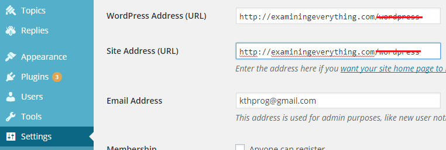
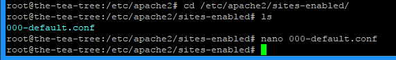
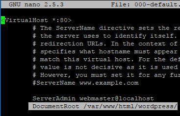
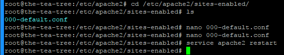

| | House | Parking | Events | Detroit Events | Cafes | Blogs & Updates | About | Blog | | |
|
|
||||||
|
The Real Way to Move Your WordPress Site to the Root Directory
Oct 21, 2017
wordpress directory, which many users move to the root web directory. However, this can result in a website with a URL like http://.../wordpress/..., which is generally not very appealing, especially if it is a production website for sales, or a popular blog.
If you look online, many how-to's will tell you to run through all kinds of complicated URL rewriting schemes and to run many many commands just to move your WordPress installation, and God forbid you have any plugins installed. Luckily, there's a very easy way to move your WordPress installation, so let's get to that.
wordpress, or whatever the root directory name is from the URLs in the image below. This should leave you with only the URL of your website (and no trailing slash). Save these settings.
You may see an error, and your WordPress site is likely to go down until the next step.

Change WordPress Directory/etc/apache2/sites-enabled, so you can run cd /etc/apache2/sites-enabled to get there.

Edit Confignano 000-default.conf and change the following line DocumentRoot /var/www/html/ to DocumentRoot /var/www/html/wordpress/, or whatever your root installation directory is.

Change Rootservice apache2 restart to restart your web server, and voila, your WordPress site is now located at the root URL of your website.

Restart Apache